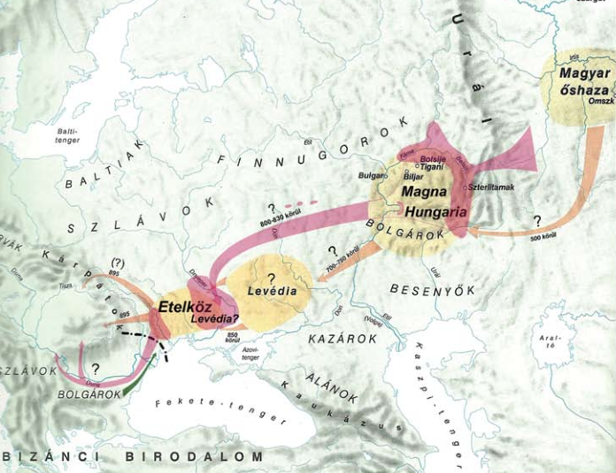

Népünk történelme régi időkre nyúlik vissza, azonban önálló népként körülbelül 2000 éve létezünk. Az Urál hegység környékéről származunk. A globális lehűlés miatt vándorlásra kényszerültünk, aminek első állomása Magna Hungária volt a Volga és Káma folyók vidékén. Második állomásunk Levédia lett az Azovi-tenger és a Don folyó környékén. Itt sajnálatos módon a Kazár Birodalom fogságába kerültünk. Harmadik állomásunk Etelköz a Dnyeper és Al-Duna vidékén volt. Ekkor mi magyarok 7 törzsre voltunk oszolva, melynek nevei Nyék, Megyer, Kürt-Gyarmat, Tarján, Jenő, Kér és Keszi voltak. Ennek a 7 törzsnek a 7 vezére pedig Álmos, Előd, Ond, Kond, Tas, Huba és Töhötöm volt. Etelközből végül ide, a Kárpát-medencébe vándoroltunk viszont előtte fölfedeztük a területet. 862 körül zsoldosokként harcoltunk a környéken így sikerült felfedeznünk a későbbi hazánkat. A Kárpát-medence tökéletesnek bizonyult hiszen körbeveszik a Kárpátok így könnyű védeni a területet és hasonlít a füves pusztákra az Urál környékén így még otthonos is.
895 környékén elkezdtük elfoglalni hazánkat. 907-re az egész terület a miénk volt. Géza fejedelmünk 972-ben lett az uralkodó egészen 997-ig. Békét kötött I. Ottó császárral így a nyugati határunk a Lajta folyó lett. Felvették a kereszténységet és megkeresztelkedtek családjukkal. A Német-római birodalommal való szövetségünk akkor köttetett meg végleg mikor István királyunk feleségül vette Gizellát ki II. Henrik húga volt. István királyunk 997-ben lett fejedelem, Géza halálát követően, 1000-től pedig királyunkká koronáztatott hisz legyőzte ellenfeleit. Azóta vagyunk Magyar Királyság. Kezdetben 10 egyházmegyét alapított királyunk. 2 érsekség volt, egy Esztergomban, egy pedig Kalocsán. István felszámolta a pogányságot és kötelezővé tette a miselátogatást, valamint a böjtöt ahogy azt a szent könyv írja és 10 falunként templomot emeltetett. Hivatalos fizetőeszközünk a dénár, amit csakis királyunk verettethet.
Országunk vármegyékre van tagolva, megyésispánokkal az élükön. Egy vármegyének több része van. Vannak a várbirtokok melyben a vármegye vezetője, családja és személyzete él. Vannak udvarbirtokok melyen az udvarnépek élnek és dolgoznak. Ha vitéz tisztséget tölt be, költözhet egy vitézbirtokra melyet a király biztosít. Országunkban az egyháznak is vannak birtokai, ahol a püspökségek és kolostorok állnak, valamint az egyház tagjai és dolgozói élnek. Magánbirtokaik még a földesuraknak vannak, ahol ők, családjuk és a nekik dolgozó emberek élnek. A királyi udvar Székesfehérváron található, amit a nádor felügyel.